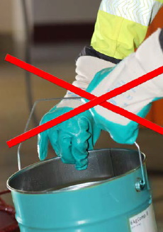
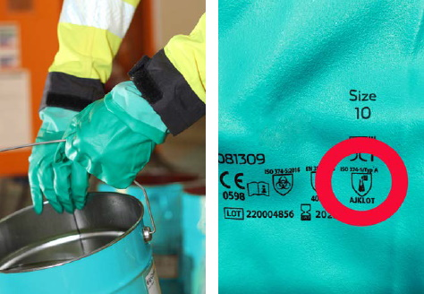

Beim Umgang mit lösemittelfreien Epoxidharz-Produkten4 müssen speziell auf Epoxidharz getestete Schutzhandschuhe aus Nitril oder Butylkautschuk getragen werden. Hinweise zu geeigneten Schutzhandschuhen sind in den Informationen der herstellenden Firmen, im Anhang 3 oder unter www.bgbau.de/epoxidharze/handschuhe zu finden.
Bei Verwendung von Lösemitteln oder lösemittelhaltigen Produkten sind auf die Lösemittel abgestimmte Chemikalienschutzhandschuhe auszuwählen.
Schutzhandschuhe, die ausschließlich einen mechanischen Schutz bieten, wie Lederhandschuhe oder viele nitrilgetränkte Baumwollhandschuhe (s. Bild 8), bieten keinen Schutz gegenüber Epoxidharzbestandteilen.

Abb. 8 So nicht! Epoxidharz nicht mit nitrilgetränkten Baumwollhandschuhen verarbeiten!

Abb. 9 Geeignete Chemikalienschutzhandschuhe beim Umgang mit Epoxidharzen
Beim Tragen von Schutzhandschuhen sollte Folgendes beachtet werden:
Hautschutzmittel niemals als Ersatz für Schutzhandschuhe verwenden! Sie bieten keinen Schutz gegen hautgefährdende Stoffe wie Epoxidharze und können daher das Auftreten von Hauterkrankungen nicht verhindern.
Beim Mischen der Komponenten oder bei der Gefahr von Spritzern ist eine Schutzbrille aufzusetzen. Bei Arbeiten über Kopf, bei der Spritzverarbeitung oder der Rissverpressung ist ein Gesichtsschutzschild notwendig.
Bei Arbeiten mit Epoxidharzen ist auch bei heißem Wetter hautbedeckende Arbeitskleidung (lange Hose, langärmeliges Oberteil) zu tragen. Zusätzlich können je nach Tätigkeit Chemikalienschutzanzüge
Schutzhosen, Schürzen, Überzieher, Ärmelschoner o. ä. notwendig sein.
Beim Anmischen sind Chemikalienschutzanzüge, Schutzhosen oder Schürzen zu tragen. Wenn bei den Arbeiten gekniet wird oder Beschichtungen mit einem Roller aufgetragen werden, sollte eine Einwegschutzhose verwendet werden.
Beim Gang über feuchtes Material müssen Nagelschuhe getragen werden.
Die Arbeitskleidung sollte regelmäßig gewechselt werden, mindestens täglich. Kleidungsstücke, die mit Epoxidharz verunreinigt wurden, sind umgehend zu wechseln.
Einweg-Schutzkleidung ist nach Gebrauch zu entsorgen. Dabei sind Schutzhandschuhe zu tragen. Straßenkleidung nicht zusammen mit Arbeitskleidung aufbewahren!
Hautreinigung
Bei der Hautreinigung ist auf aggressive Hautreinigungsmittel, die Reibe- oder Lösemittel enthalten, zu verzichten. Diese schädigen die natürliche Hautbarriere. Durch eine vorgeschädigte Haut wird das Eindringen der allergieauslösenden Stoffe begünstigt. Bei der Hautreinigung ist Folgendes zu beachten:
Hautpflege
Die Hände sollten am Arbeitsende nach dem Händewaschen mit einem Hautpflegemittel eingecremt werden. Hautpflegemittel tragen dazu bei, dass die Haut in einem guten Zustand bleibt und sich nach einer Hautbelastung schneller regeneriert.
Bei der Verarbeitung lösemittelhaltiger Epoxidharze können die Grenzwerte der Lösemittel überschritten werden und die Verwendung von Atemschutz notwendig sein. Aktuelle Informationen liefern Brancheninformationen wie die WINGIS-Informationen.
Grundsätzlich ist vor der Verwendung von Atemschutz zu prüfen, ob sich die Lösemittelbelastungen durch technische Maßnahmen (Lüftung, Absaugung) so weit reduzieren lassen, dass die Arbeitsplatzgrenzwerte eingehalten werden.
Ist dies nicht möglich, muss Atemschutz getragen werden. Geeignet sind beim Handauftrag Atemschutzgeräte mit Filtern gegen organische Gase und Dämpfe (A-Filter, Kennfarbe braun). Empfehlenswert sind gebläseunterstützte Atemschutzgeräte.
Bei der Spritzapplikation werden feine Aerosole freigesetzt. Es sind daher Kombinationsfilter vom Typ A2P2 oder umgebungsluftunabhängige Atemschutzgeräte (z. B. Schlauchgeräte) zu verwenden.
4 Als lösemittelfrei gelten Produkte, wenn der Lösemittelgehalt des verarbeitungsfertigen Produktes kleiner als 0,5 % ist. Als ,total solid' werden Produkte bezeichnet, die nach dem Prüfverfahren der Deutschen Bauchemie e.V. einen Massenverlust I ≤ 1 % (Prüfung über 24 Stunden nach dem Anmischen bei 23 °C) und einen Massenverlust II ≤ 2 % (Prüfung nach weiteren 24 Stunden bei 80 °C) aufweisen.